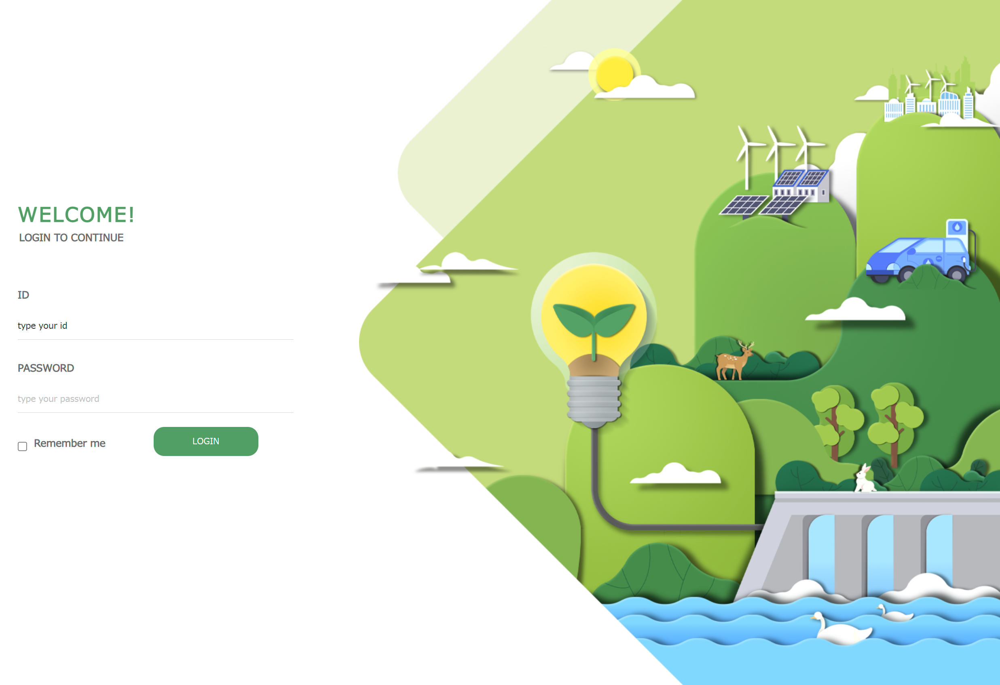
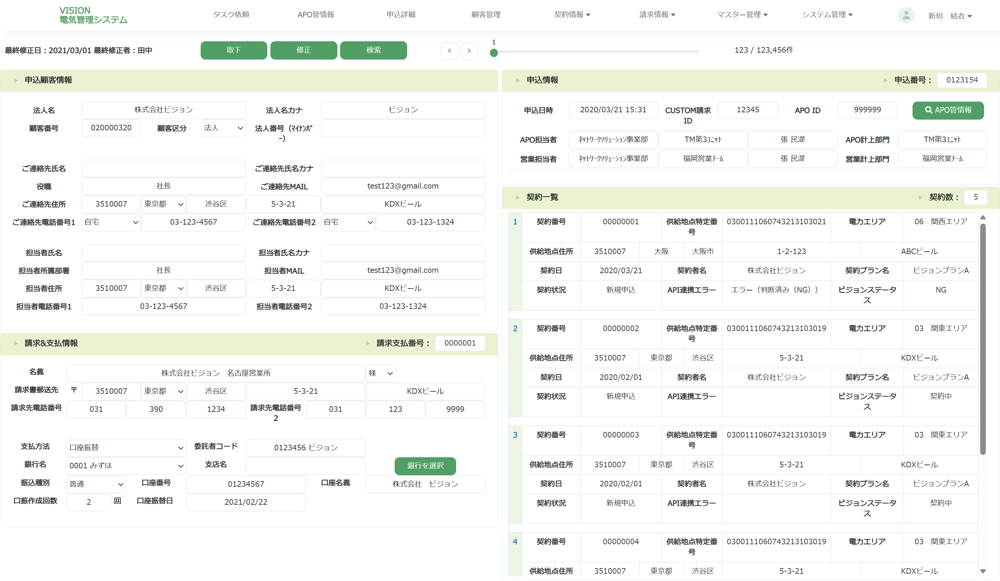

ESIGN
ESIGN


사내 업무 자동화 소개 페이지 프로젝트로 디지털 감성을 강조하기 위해 퍼플과 시안 컬러를
메인·서브로 활용 하였습니다. 아이콘은 그라데이션을 적용해 사이버틱한 분위기를 연출 하였고,
워드 프로스 기반의 사내 전용 페이지로 현재 운영되고 있습니다.
실제 서비스는 동적 웹 페이지며, 보안과 접근성 문제로 인해 포트폴리오에는 이미지 자료로
대체하여 작업물을 전달 드립니다. 내부 사용자에게 현대적이고 전문적인 디자인 경험을 제공하고
업무 효율화와 사용자 만족도를 높이는데에 주력한 프로젝트 입니다.


이 프로젝트는 전기 판매를 주제로 한 웹사이트 디자인 및 퍼블리싱 작업입니다. 저는 사이트 전체 디자인 제작에 참여하였으며,퍼블리싱 작업은 약 60% 정도 참여해 시각적 완성도와 웹기능 구현의 균형을 맞추는 데
집중했습니다.
친환경의 이미지를 살리기 위해 초록빛을 메인 컬러로 사용했고, 주로 테이블 기반의 레이아웃으로 정보를 명확히 전달하는 데 중점을 두었습니다. 메뉴는 일부만 활성화 되어 있는데, 이는 기존에 확보한
리소스 범위내에서 핵심기능을 우선적으로 구현한 결과입니다.

